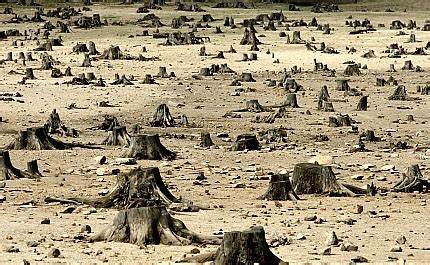
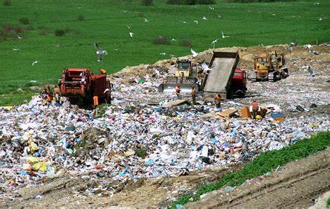

What are we doing wrong?
-
Under-use of renewable/recycled things/materials
Renewable resources could be:
- Renewable energy
(solar panels; etc.)
- CO2 neutral options
Biofuels
Carbon Capture

Solar energy - a perfect example of a renewable resource. Our planet receives in a single hour is the same amount of energy from the sun that the entire world’s population uses in one year!
- Renewable energy
-
Conservation natural resources
At a basic level this could be:
- Recycling paper and wood saves trees and forests. Yes, you can plant new trees, but you can't replace virgin rainforest or ancient woodlands once they're lost.
- Recycling plastic means creating less new plastic, which is definitely a good thing, especially as it's usually made from fossil fuel hydrocarbons.
- Recycling metals means there's less need for risky, expensive and damaging mining and extraction of new metal ores.
- Recycling glass reduces the need to use new raw materials like sand – it sounds hard to believe, but supplies of some types of sand are starting to get low around the world.
Making products from recycled materials requires less energy than making them from new raw materials. Sometimes it's a huge difference in energy.
How does technology effect the environment?
-
Air and water pollution
Air pollution occurs when harmful or excessive quantities of gases such as carbon dioxide; methane are put into the earth’s atmosphere.The main sources all relate to technologies which emerged following the industrial revolution such as the burning of fossil fuels, factories, power stations, mass agriculture and vehicles - some may argue some of these causes are necessary for people to live or make a living E.g. mass agriculture. Consequences of air pollution include negative health impacts for humans and animals and global warming.
-
Depletion of natural resources
Resource depletion is another negative impact of technology on the environment. It refers to the consumption of a resource faster than it can be replenished. Natural resources consist of those that are in existence without humans having created them and they can be either renewable or non-renewable (E.g. wood - renewable, lithium - non-renewable). There are several types of resource depletion, with the most severe being aquifer depletion, deforestation, mining for fossil fuels/minerals, contamination of resources and overconsumption of resources. These mainly occur as a result of agriculture and general consumption, all of which have been "enabled" by advancements in technology. Due to the increasing global population, levels of natural resource degradation are also increasing. Therefore, this problem will only get worse!

Examples of harmful behaviour
We all love the newest gear, wether that would be an iPhone or a games console, we all want it. We often (if at all) consider the affect we have on the environment when we throw out our old devices to landfill and buy new ones in.
-
Non-transparent disposal methods: this can lead to use of systems that cause users to think that the system works and causes benefits, however, often causes more damage since methods like 'turn in recycling' upon buying a product can leave the product often disposed of incorrectly.
 -
The over-extraction of materials to furfill demand causes large amounts of damage to the Earth, this occurs lots in the Amazon for gold and other resources. This is highly grave due to the fact that the Amazon is home to indeginous people and many unique; rare species of plants unfound anywhere else, damage of this habitat could cause the loss of the species.
-
Learn some issues and impacts